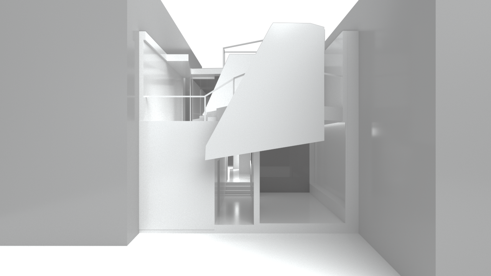
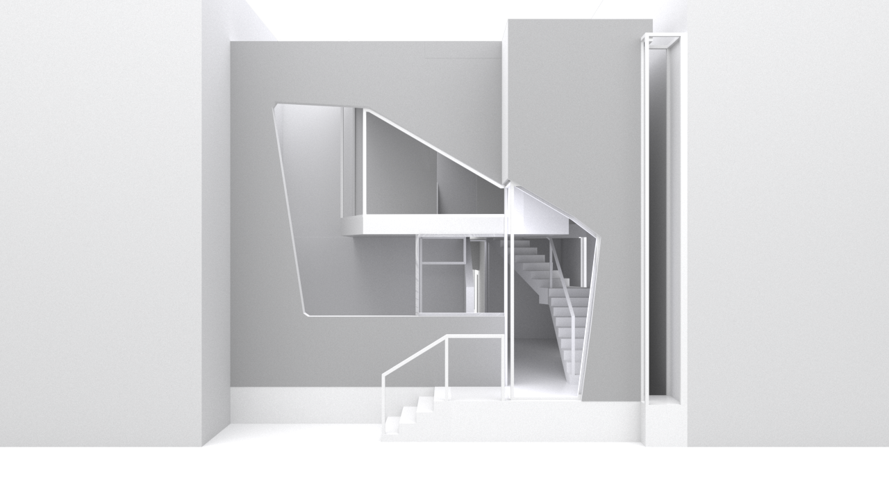
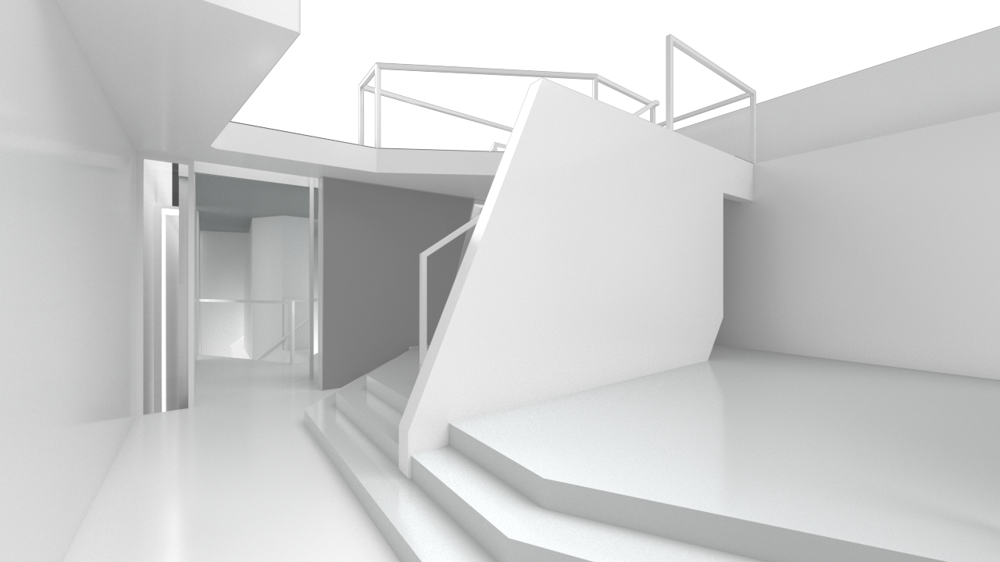
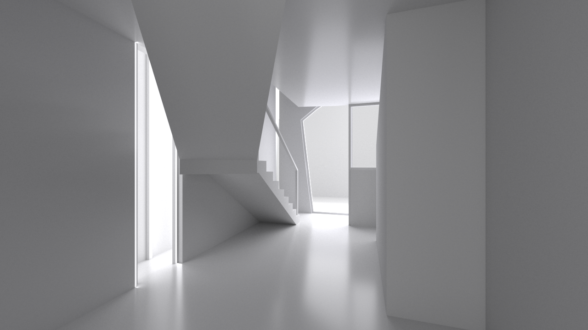
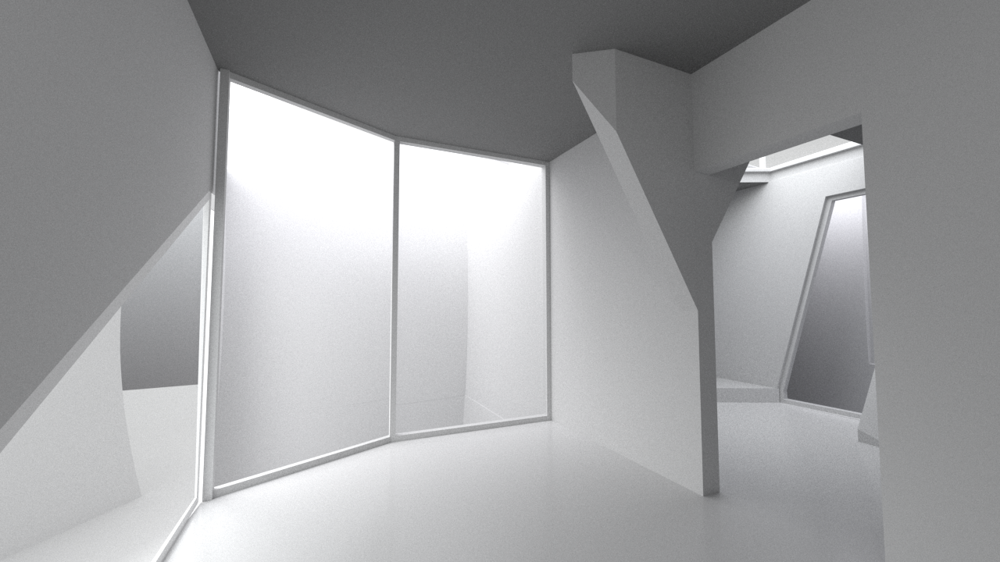

.png "Dolmen X Dom-Ino")





Collaborated with: Sam Miller
UC Berkeley Introduction to Architecture Studio, Spring 2021
This project explores the different methods employed in the creation of the digital models of the precedent studies: the Crucuno dolmen (carving through Boolean operations) and Le Corbusier's Dom-Ino (extrusions). It aimed to create diverse dyanmic spaces from a repetitive and gridded formal arrangement.